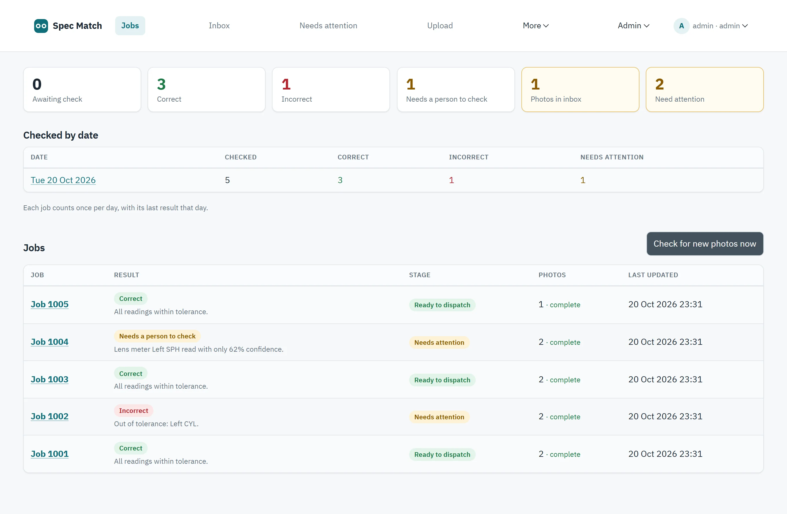
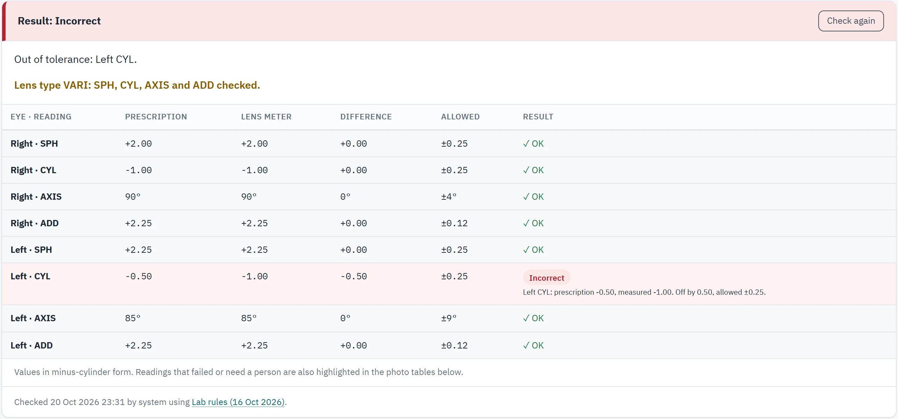
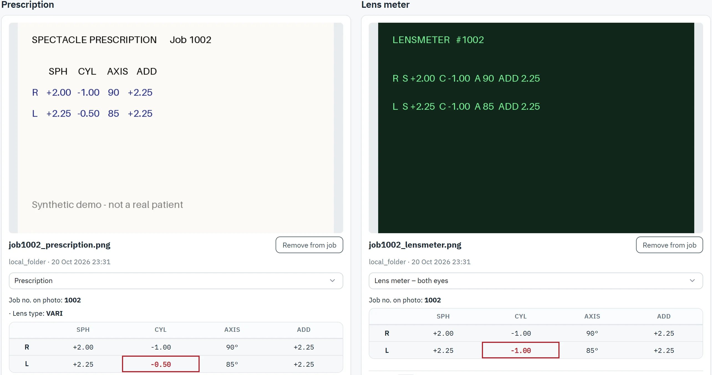
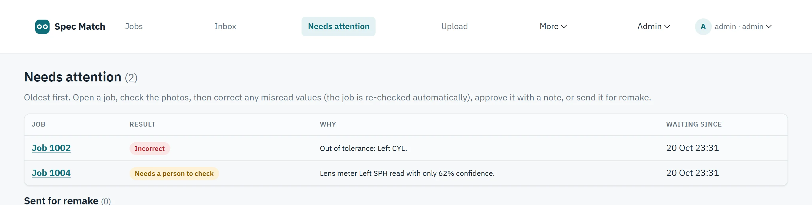
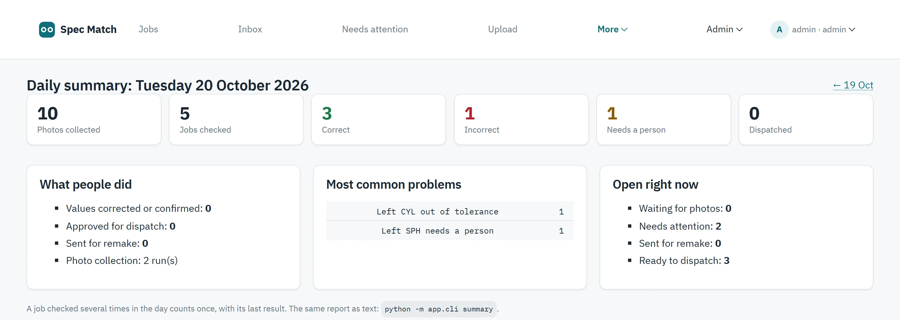

Automated final inspection · ISO 21987
Precision you can dispatch.
Spec Match reads the prescription and the lens meter from a photo, checks every value for each eye, and stops any pair that isn't right before it reaches your customer.
Left CYL is off by 0.50; allowed ±0.25. Held from dispatch until a supervisor approves it or the lens is remade.
From the bench to dispatch, in one photo.
The same comparison your technicians make by eye, run the same way on every job, every hour.
Photograph
Photograph the prescription slip beside the lens meter screen. New photos are collected from your shared folder every hour, or on demand.
Read and match
The AI reader extracts the job number, lens type and every value. Photos are grouped by job, so one customer's lenses are never checked against another's prescription.
Check each eye
Right and left are compared separately against ISO 21987 tolerances, or your own, using the values that apply to the lens type.
Dispatch safely
Only Correct or supervisor-approved jobs can be dispatched. Everything else waits in a Needs attention queue.
The product
Built for the people at the bench.
Every job, its result and the reason, on one screen.
See at a glance what is ready to dispatch, what is wrong and what needs a person, with a running count for each day.
- Plain-English reason on every job
- Day-by-day totals for the last two weeks
- Collect new photos with one click

The result, explained eye by eye.
Each reading shows the prescription, the lens meter value, the difference and the margin allowed, so nobody has to work out why a job failed.
- Checks the values that apply to the lens type
- Shows the exact eye and value that failed
- Records which tolerance rules were used

The photo and the values read from it, side by side.
Staff can confirm any value against the original photo in seconds. Problem values are outlined: red for wrong, orange for unsure.
- Correct a misread value and the job is re-checked
- Read a photo again with one click
- Photos stored encrypted

One queue for everything that needs a person.
Oldest first, with the reason up front. Fix a misread value, approve with a note, or send for remake.
- Only supervisors can approve an Incorrect job, with a reason
- Remakes are re-checked when new readings arrive

The day's work, in one report.
Photos collected, jobs checked, the most common problems, what people did and what's still open.

Three outcomes. Zero guesswork.
Every value is within the allowed margin. Ready to dispatch.
Something is outside the margin. The screen shows which eye, which value and by how much.
A blurry photo, a missing value or an unsure reading goes to your staff. Spec Match never guesses Correct.
| LENS TYPE | VALUES CHECKED |
|---|---|
| Single vision (NEAR SV, DIST SV) | SPHCYLAXIS |
| Single vision with prism | SPHCYLAXISPRISM |
| Varifocal (VARI) and bifocal (BIF) | SPHCYLAXISADD |
| Missing or unreadable | Goes to a person, who can set the lens type and re-check. |
Default margins follow ISO 21987: SPH and CYL ±0.25, AXIS by cylinder power, prism ±0.33 up/down and ±0.66 in/out. A value exactly on its limit passes.
Secure by design.
Photos encrypted at rest and HTTPS throughout. Only the image reaches the AI reader, never patient details.
Every photo, reading, result and staff decision is recorded: who, what and when.
Checker, Supervisor and Admin. Tolerances are adjustable, every change is logged and open jobs are re-checked.
Nightly backups, each one restored automatically to prove it works. Load-tested at 150 jobs a day for a month.
See it check your jobs.
A 30-minute walkthrough using photos from your own bench.